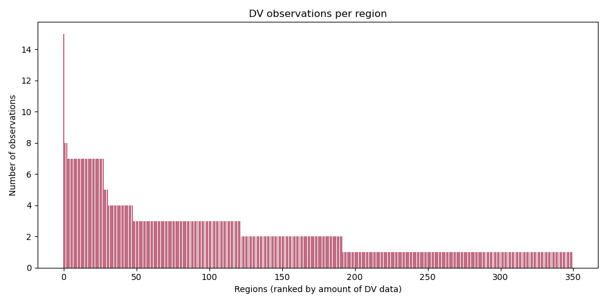
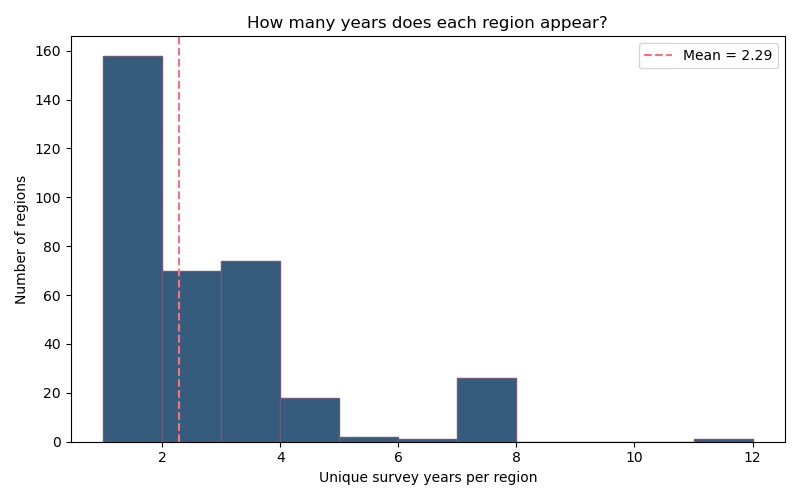
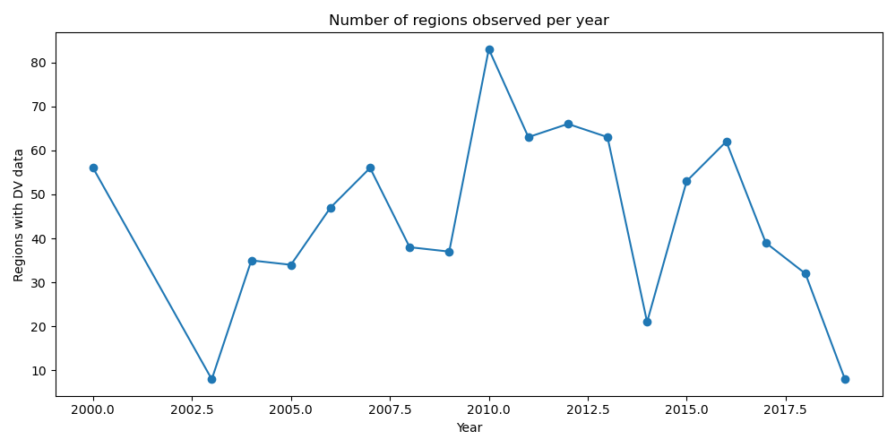
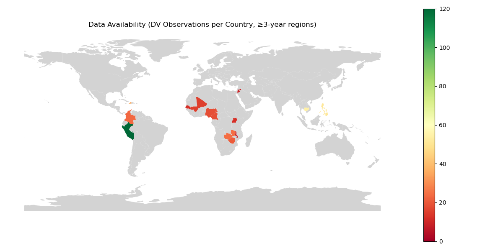

Number of DV observations per region, ranked from highest to lowest.

Distribution of how many survey years each region appears in.

Number of regions observed per year.
================================================ YEARS PER REGION ================================================ count 350.000000 mean 2.288571 std 1.726130 min 1.000000 25% 1.000000 50% 2.000000 75% 3.000000 max 11.000000 Name: year, dtype: float64
20 regions with FEWEST years: .... Sikkim 1 Kerala 1 Khomas 1 Khulna 1 Kotayk 1 Shirak 1 Kunene 1 La Paz 1
20 regions with MOST years: region_name_harmonized Central 11 Moquegua 7 Puno 7 Nord-Ouest 7 Ica 7 Huanuco 7 Huancavelica 7 ...
================================================ Important numbers ================================================ Individual observations available: 809 Unique regions: 350 Unique region-years: 801 Mean years per region: 2.29 Median years per region: 2.00 Regions with more than 4 years, and nr of observations: 30 regions, 209 region-year obs More than 5 years, and nr of observations: 28 regions, 199 region-year obs 7 or more years, and nr of observations: 27 regions, 193 region-year obs
==================================== FILTERED SAMPLE (≥3 YEARS) ==================================== Regions: 120 Observations/Region-years: 464 Mean years per region: 3.87 Median years per region: 3.00
Number of countries: 14 Cameroon, Colombia, Haiti, Jordan, Cambodia, Mali, Malawi, Nigeria, Peru, Philippines, Senegal, Uganda, Zambia, Zimbabwe
country n_obs
PER 162
KHM 54
PHL 51
HTI 36
ZMB 24
COL 23
ZWE 21
CMR 18
NGA 18
MLI 15
SEN 12
UGA 12
JOR 9
MWI 9

Countries in darker green have more DV observations. Grey countries are not included after applying the ≥3-year region filter.